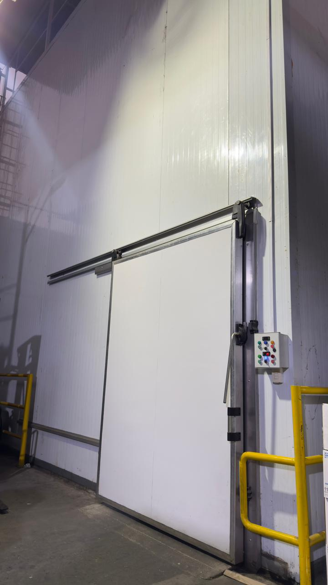

VALECORP COMPANY
Soluciones de almacenamiento, conservación y manejo de frutas importadas en cámaras frigoríficas.
VALECORP COMPANY
VALECORP COMPANY es una empresa orientada a brindar servicios de almacenamiento, conservación y manejo de frutas importadas en cámaras frigoríficas.
Nuestro compromiso es preservar la calidad y frescura de la mercadería de nuestros clientes mediante procesos organizados, seguros y eficientes.
Conocer más sobre nosotros →
LO QUE HACEMOS
Conservación de frutas importadas bajo condiciones adecuadas de almacenamiento.
Seguimiento de las condiciones necesarias para conservar la calidad de los productos.
Control de ingresos, salidas y stock de la mercadería.
NUESTRO PROCESO
Ingreso y registro de la mercadería.
Control de productos y documentación.
Ubicación organizada dentro de las cámaras.
Control de las condiciones de conservación.
Seguimiento y control del stock.
Verificación y salida de la mercadería.
VALECORP COMPANY
Trabajamos con responsabilidad, seguridad, eficiencia y compromiso con la calidad.
Solicitar información